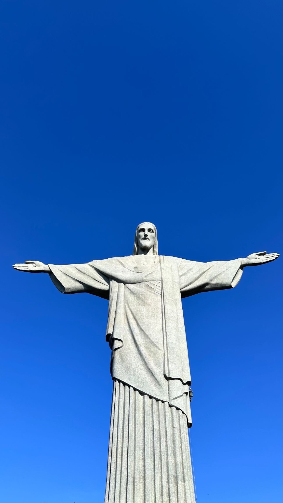
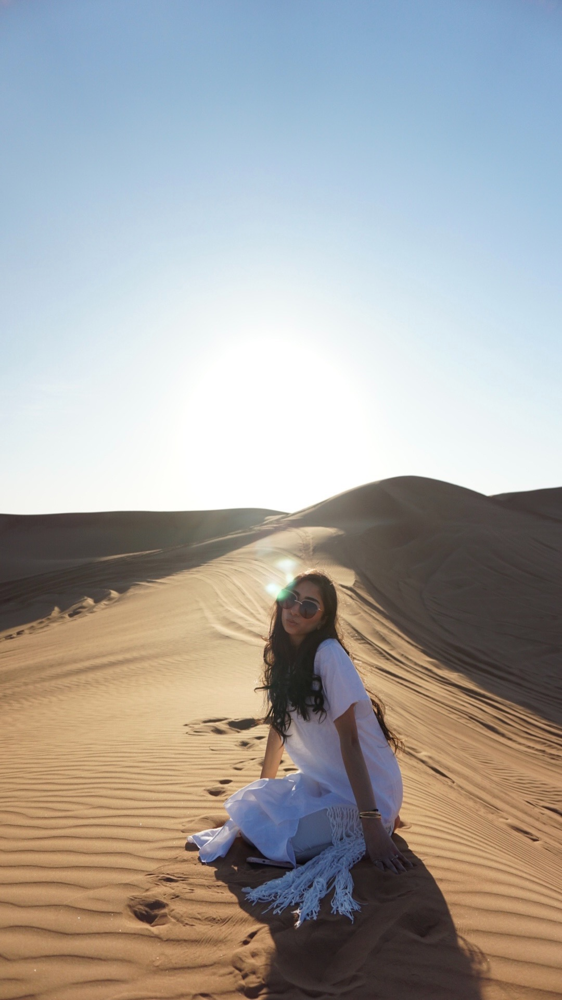

Photography
Selected
Frames
A curated collection of moments, details, places, and visuals captured through my lens.





Photography
A curated collection of moments, details, places, and visuals captured through my lens.

